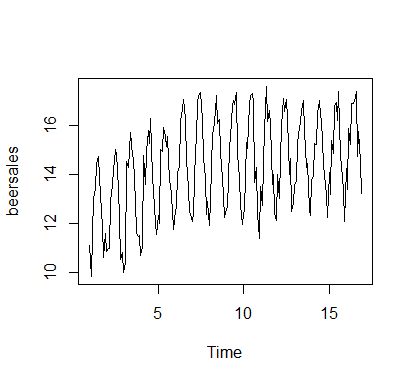

Beer Sales Time Series Anaylsis Current Project
This is a data set of 192 months of Beer sales.This data set will be tested with R through Postgres using:
- Holt-Winters Exponential Smoothing
- Arima Analysis
- Fast Fourier Transformation
Download:
Data Set R CodeSplitting for Train and Test data sets
After splitting the data using the first 180 months as the train data, a Holt-Winters model is created with the following parameters:
- alpha=0.110466
- beta=0
- gamma=0.6102043
The Holt-Winters model forecasts for the last 12 months were not inline with the original last 12 months of the data set so further testing of the data set using ARIMA and FFT will be down in the future.
Plot for Total Beer Sales
Holt-Winters Compontents
A breakdown of the observed, trend, seasonal and random elements of the first 180 data points. Data is additive.

Holt-Winters Fit Plot

Look into ARIMA Parameters for Model Analysis
Train Data ACF

Train Data PACF

A Look to See if First Differencing is Needed

An Arima Model of (12,1,4) Is Tested
(12,1,4) Model Forecast
 Forecasts.png)
(12,1,4) Model Fit Against the Original Data
 vs Original Data.png)